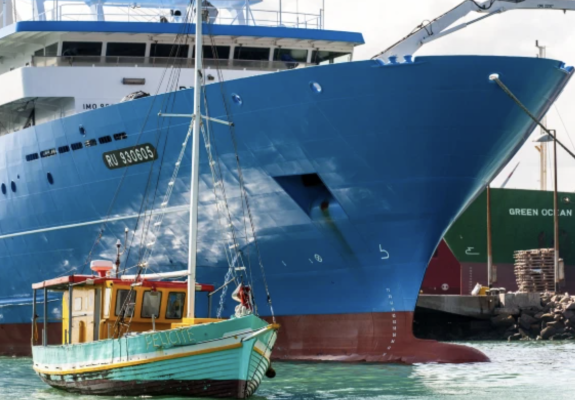

Abril 2026
Invirtiendo de forma más inteligente y profunda para avanzar en equidad
Un nuevo artículo donde Natali ha participado como co-autora revela que miles de millones invertidos en proyectos marinos a menudo pasan por alto la equidad, con el riesgo de generar resultados injustos allí donde se necesitan inversiones más inteligentes y profundas.
Leer más